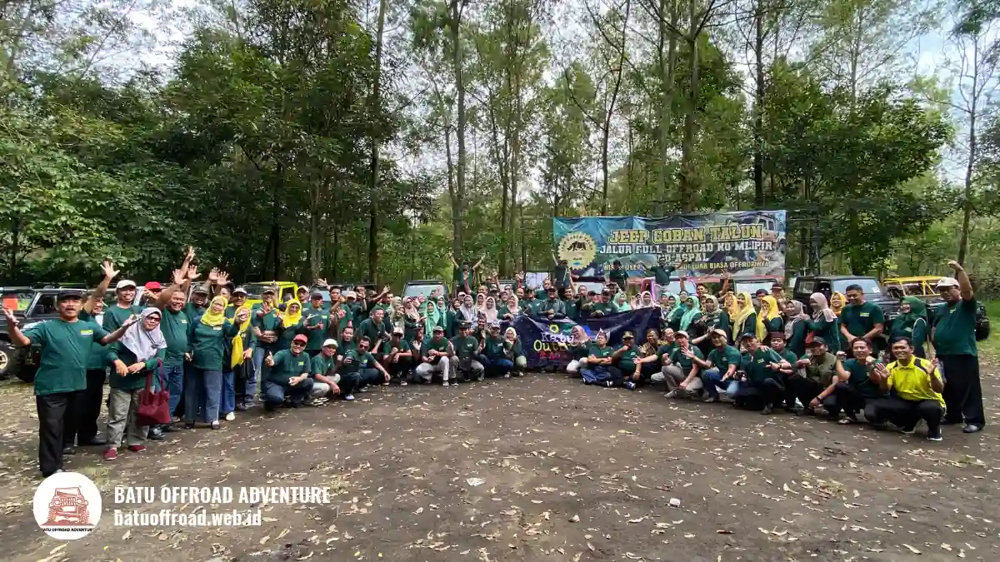

Aktivitas Keluarga di Batu yang Bisa Digabung dengan Offroad
Aktivitas keluarga di Batu yang cocok digabung dengan offroad meliputi wisata alam di sekitar Coban Talun, kegiatan santai untuk anak, dan waktu istirahat kuliner agar semua usia tetap nyaman.
- Offroad paling baik ditempatkan sebagai kegiatan utama, lalu dilengkapi aktivitas santai.
- Wisata alam, area bermain anak, dan kuliner hangat cocok untuk semua usia.
- Jadwal yang tidak terlalu padat membantu anak dan lansia tetap nyaman.
- Kota Batu berhawa sejuk, sehingga kegiatan di luar ruang cukup menyenangkan di sebagian besar waktu.
- Tanyakan paket dan jadwal ke Batu Offroad Adventure agar kegiatan lain dapat disusun serasi.
Aktivitas Keluarga Apa yang Cocok Digabung dengan Offroad di Batu?
Aktivitas yang cocok digabung dengan offroad di Batu adalah wisata alam ringan, kegiatan anak yang santai, dan waktu istirahat dengan kuliner, karena kombinasi ini menjaga energi seluruh anggota keluarga.
Offroad menghadirkan sensasi aktif dengan guncangan dan debu. Setelahnya, tubuh biasanya membutuhkan ritme yang lebih tenang. Karena itu, pasangkan dengan kegiatan yang tidak menuntut banyak tenaga.
Pilihan umum bagi keluarga di Kota Batu meliputi:
- Wisata alam: berjalan santai di area sekitar Coban Talun dan pemandangan pegunungan.
- Kegiatan anak: area bermain atau taman yang aman bagi anak.
- Kuliner hangat: minuman dan makanan khas dataran tinggi untuk beristirahat.
- Berfoto bersama: titik pemandangan sebagai kenang-kenangan keluarga.
Mengapa Keluarga Perlu Menggabungkan Beberapa Aktivitas?
Keluarga perlu menggabungkan aktivitas karena setiap anggota punya minat dan daya tahan berbeda; variasi kegiatan membuat anak, orang dewasa, dan lansia sama-sama mendapat pengalaman yang menyenangkan.
WHO dalam Guidelines on Physical Activity and Sedentary Behaviour 2020 merekomendasikan anak dan remaja usia 5 sampai 17 tahun melakukan aktivitas fisik intensitas sedang hingga berat rata-rata minimal 60 menit per hari. Liburan di Kota Batu dapat menjadi kesempatan alami bagi anak untuk bergerak aktif di alam.
Namun, kegiatan fisik yang sama tidak selalu cocok untuk semua usia. Orang tua yang mudah lelah atau lansia mungkin lebih nyaman dengan jalan santai. Dengan memadukan beberapa aktivitas, tidak ada anggota keluarga yang merasa tertinggal.
Bagaimana Menyusun Jadwal Satu Hari Keluarga di Batu?
Susun jadwal dengan menempatkan offroad di waktu paling segar, lalu lanjutkan aktivitas ringan, makan siang, dan istirahat, sehingga kegiatan tidak terlalu padat dan anak maupun lansia tidak kelelahan.
Contoh pola yang realistis, dengan waktu yang dapat disesuaikan:
- Pagi: offroad bersama keluarga setelah sarapan ringan.
- Siang: istirahat, makan, dan minum hangat.
- Sore: kegiatan santai seperti jalan-jalan atau berfoto.
- Malam: kembali ke penginapan dan beristirahat.
Jangan memaksakan terlalu banyak destinasi. Perjalanan antar tempat di Kota Batu memang relatif dekat, tetapi anak dan lansia tetap memerlukan waktu istirahat. Satu atau dua kegiatan tambahan sering kali sudah cukup.
Tanyakan jadwal yang tersedia kepada Batu Offroad Adventure agar kegiatan lain dapat diatur menyesuaikan jam keberangkatan.
Aktivitas Santai Apa yang Cocok untuk Anak di Batu?
Aktivitas santai yang cocok untuk anak di Batu adalah bermain di taman atau area terbuka, mengenal alam secara ringan, dan menikmati camilan, karena kegiatan ini aman dan tidak menuntut tenaga besar.
Anak biasanya senang dengan kegiatan interaktif yang tidak terlalu lama. Ajak mereka mengamati pemandangan, mengenal tanaman, atau bermain di area terbuka yang aman dan diawasi.
Perhatikan pula kebutuhan dasar anak: air minum, topi atau jaket sesuai cuaca, dan waktu istirahat yang cukup. Jika anak belum cukup besar untuk offroad, kegiatan ini bisa menjadi pilihan utama selagi anggota keluarga lain mencoba offroad bergantian.

Aktivitas santai di tengah lanskap alam terbuka melengkapi serunya petualangan offroad keluarga di Batu.
Aktivitas Apa yang Nyaman untuk Orang Tua dan Lansia?
Aktivitas yang nyaman untuk orang tua dan lansia di Batu adalah jalan santai di jalur rata, menikmati pemandangan dari titik istirahat, dan bersantap hangat, karena kegiatan ini minim guncangan dan tidak melelahkan.
Orang tua dan lansia umumnya menikmati suasana sejuk Kota Batu. Pilih tempat dengan fasilitas duduk, toilet, dan akses yang tidak terlalu curam. Beri waktu lebih untuk berpindah dari satu titik ke titik lain.
Bagi lansia yang ingin mencoba offroad, konsultasikan kondisi kesehatan terlebih dahulu.
Bagaimana Mengatur Waktu Istirahat dan Makan Selama Liburan?
Atur istirahat dengan menjadwalkan jeda minimal setelah offroad dan di antara kegiatan, serta makan di waktu yang teratur, supaya anak dan lansia tetap bertenaga dan tidak mudah mual.
Hindari makan terlalu kenyang sebelum offroad karena guncangan dapat membuat sebagian orang tidak nyaman. Setelah offroad, berikan waktu untuk minum air dan beristirahat sejenak, terutama bila perjalanan berdebu.
Udara sejuk di Kota Batu terkadang menipu; anak-anak dapat berkeringat saat bergerak, lalu kedinginan saat berhenti. Bawa jaket tipis dan pakaian ganti agar mereka tetap nyaman sepanjang hari.
Apa Tips agar Liburan Keluarga di Batu Tidak Melelahkan?
Agar liburan tidak melelahkan, batasi jumlah kegiatan, sediakan waktu istirahat, bawa bekal air dan camilan, serta sesuaikan ritme dengan anggota paling cepat lelah, yaitu biasanya anak kecil atau lansia. Anda juga bisa menyimak tips lengkap dalam artikel panduan offroad Batu untuk keluarga.
Beberapa tips praktis:
- Prioritaskan satu kegiatan utama, misalnya offroad, lalu tambahkan secukupnya.
- Berangkat lebih pagi untuk menghindari keramaian dan cuaca yang berubah.
- Siapkan cadangan rencana bila hujan turun.
- Bawa perlengkapan dasar: jaket, masker, air minum, dan obat pribadi.
- Libatkan seluruh anggota keluarga dalam memilih kegiatan.
Dengan perencanaan sederhana, liburan menjadi lebih menyenangkan dan tidak menimbulkan kelelahan berlebihan.
Kapan Waktu Terbaik Mengatur Aktivitas Keluarga di Kota Batu?
Waktu terbaik umumnya pagi hingga siang saat cuaca lebih cerah dan jalur lebih kering, namun kondisi dapat bervariasi tergantung musim, sehingga prakiraan cuaca perlu diperiksa sebelum berangkat.
Pada musim hujan, jalur di sekitar Coban Talun dapat licin dan jadwal mungkin perlu disesuaikan. Pada akhir pekan dan musim libur, tempat wisata biasanya lebih ramai, jadi pemesanan lebih awal membantu.
Tanyakan kepada operator tentang jam yang paling nyaman untuk rombongan dengan anak dan lansia. Dengan begitu, kegiatan dapat diatur agar tidak bersamaan dengan waktu paling padat atau cuaca kurang bersahabat.
Kesimpulan
Aktivitas keluarga di Batu paling nyaman bila offroad dipadukan dengan kegiatan santai. Pilih satu kegiatan utama, tambahkan aktivitas ringan, sediakan waktu istirahat, dan sesuaikan ritme dengan anggota paling mudah lelah.
Ingin merasakan serunya langsung? Hubungi Batu Offroad Adventure di 0812-3398-9707 untuk info paket dan booking.
FAQ
-
Aktivitas apa saja di Batu yang cocok digabung dengan offroad?
Wisata alam ringan di sekitar Coban Talun, area bermain anak, kuliner hangat khas pegunungan, dan bersantai menikmati pemandangan alam sangat cocok dipadukan agar seluruh keluarga tetap berenergi. -
Mengapa keluarga perlu memadukan beberapa jenis aktivitas
wisata?
Karena setiap anggota keluarga memiliki daya tahan fisik dan minat berbeda. Variasi kegiatan memastikan anak kecil, orang dewasa, dan kakek-nenek sama-sama menikmati liburan tanpa ada yang kelelahan. -
Bagaimana mengatur jadwal satu hari liburan keluarga di Batu?
Tempatkan offroad di pagi hari setelah sarapan ringan, lanjutkan dengan makan siang dan istirahat santai, lalu isi sore hari dengan jalan-jalan santai sebelum beristirahat di malam hari. -
Kapan waktu terbaik mengatur jadwal aktivitas keluarga di Kota
Batu?
Pagi hingga siang hari adalah waktu terbaik karena cuaca relatif lebih cerah dan jalur lebih kering. Hindari jam padat liburan dengan booking paket offroad dan akomodasi lebih awal.